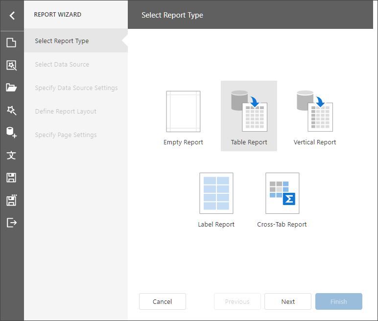
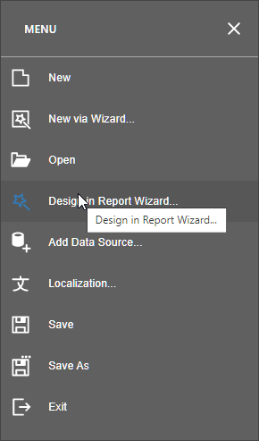
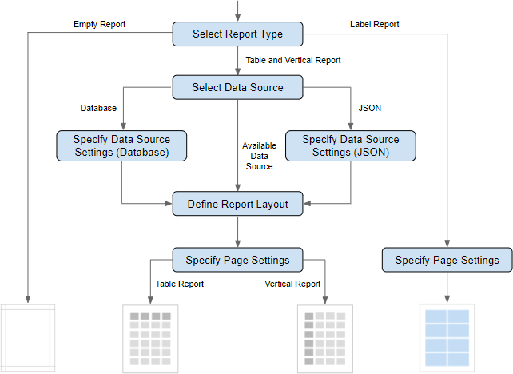
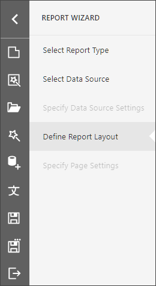

Report Wizard
The Report Wizard enables you to create reports or modify existing reports based on predefined templates.

The Designer's Menu has the following commands:
- New via Wizard - runs the Report Wizard and creates a new report.
- Design in Report Wizard - runs the Report Wizard and modifies the current report.

Report Wizard Pages
The following image shows the wizard's navigation structure:

The Wizard has a navigation panel that does the following:
- displays the entire page list
- highlights the current page
- grays out disabled pages
- allows you to switch between pages

Select the Report Type
On the start page, choose the report type you want to create.
-
Creates a blank report that is not bound to a data source. Choose this option to design your report from scratch without the wizard.
-
Creates a table report and binds it to data.
-
Creates a vertical report and binds it to data.
-
Creates badges, business cards, price tags and other label types.